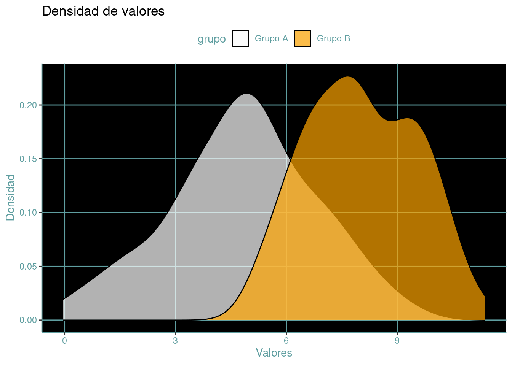
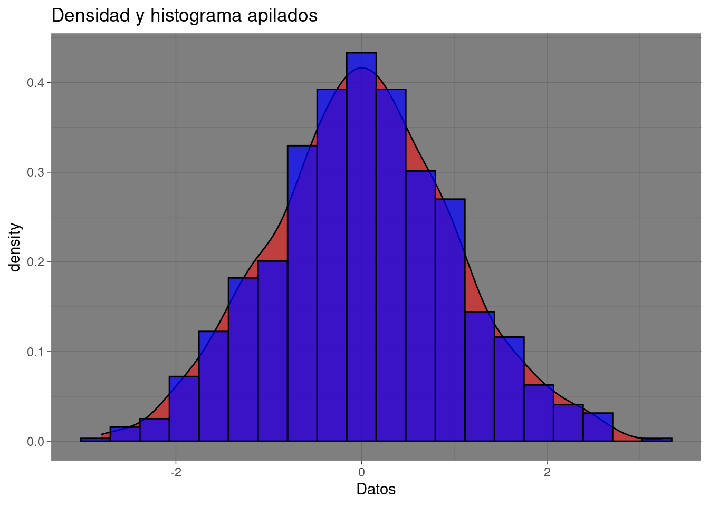

Es un término que se refiere a los programas informáticos, conjunto de instrucciones, datos o aplicaciones que permiten a una computadora realizar una variedad de tareas y funciones. Es una parte intangible de un sistema informático que proporciona las instrucciones lógicas y las estructuras necesarias para realizar diversas operaciones.
En palabras más cotidianas, podríamos comparar el software con el asistente de Tony Stark en la película Iron Man, llamado Jarvis. Este asistente controlaba el traje (hardware o computadora) y ayudaba a Stark en sus tareas. O también, de una manera más real, el sistema operativo (como Windows, Mac OS, Linux o Android) en nuestras computadoras personales es un tipo de software. Este software engloba todos esos programas e instrucciones que permiten que la computadora funcione y gestione sus recursos como la memoria, el procesamiento y la visualización de la información. Es como el cerebro detrás de las acciones de la computadora.
Se distinguen algunos tipos principales de software:
Software de Sistema
Conjunto de programas que se encarga de controlar y coordinar cómo opera el hardware, asegurando su funcionamiento de manera correcta. En esta categoría entran los sistemas operativos (como Windows, Mac OS, Linux o Android), que son como el jefe que organiza todo, los controladores de dispositivos que permiten a la computadora entender y comunicarse con sus componentes (disco duro, procesador, tarjeta gráfica, puertos USB, etc), y las herramientas para manejar archivos, como las utilidades de gestión, que nos ayudan a organizar y manejar nuestros documentos y datos.
Software de Aplicación
Son aquellas herramientas especializadas que usamos para hacer cosas específicas en nuestra computadora o dispositivos. Estos programas están diseñados para resolver problemas o realizar tareas concretas que los usuarios necesitan. Por ejemplo, tenemos los programas de escribir documentos (procesadores de texto), como Microsoft Word, las hojas de cálculo para hacer cuentas como Microsoft Excel, programas de diseño gráfico para crear imágenes, navegadores web para buscar en Internet (como Google Chrome, Firefox, Opera, Safari), juegos para entretenerse, y aplicaciones de productividad para organizar tareas, entre otros ejemplos. Esta clase de software se adapta a distintas necesidades y nos ayudan a realizar distintas actividades en nuestros dispositivos digitales.
Software de Programación
En términos simples, estos programas se usan para crear aplicaciones mediante la escritura de código. Imagina estos programas como intérpretes que traducen nuestras ideas (escritas en un lenguaje que entendemos) a instrucciones que la computadora comprende (números y códigos). Estas herramientas asisten a programadores y desarrolladores en la creación, corrección y mantenimiento de los programas que usamos a diario. Generalmente, incluyen editores para escribir el código (como Visual Studio Code, RStudio, Sublime Text, Vim, Notepad++), compiladores que transforman el código a un formato que la computadora puede ejecutar, y depuradores para detectar errores.
El software está formado por un conjunto de instrucciones escritas en lenguajes de programación, como Java, C++, Python, y otros más. Estas instrucciones son el código fuente y actúan como un manual que los programadores escriben para decirle a la computadora qué hacer. Luego, este código fuente se convierte en un lenguaje que la computadora comprende directamente, conocido como código ejecutable o código máquina. Es como transformar las instrucciones escritas por humanos en un idioma que la computadora puede seguir al pie de la letra.
Crear software implica un conjunto de pasos, como planificar, diseñar, hacer y mantener programas de computadora. Estos programas pueden ser adaptados para cubrir necesidades específicas, ya sea para una persona en particular o para empresas completas. Es como construir herramientas digitales a medida que pueden hacer lo que cada uno necesita, ya sea un usuario común o una empresa grande.
Ciclo de Vida del Software
El ciclo de vida del software se refiere a un esquema teórico que detalla las diferentes fases que atraviesa un programa o sistema de computación, desde su inicio hasta su eventual desuso o retiro. Este ciclo ofrece una estructura organizada para guiar el desarrollo, cuidado y administración del software a lo largo de su existencia.
La norma ISO/IEC/IEEE 12207:2017 representa un estándar global que define pautas y criterios para las etapas del ciclo de vida del software. Esta normativa proporciona directrices y condiciones específicas para la administración, desarrollo, compra, entrega, operación y cuidado tanto del software como de los sistemas de información.
Aunque existen diferentes modelos de ciclo de vida del software (Modelo en Cascada, modelo en espiral, RAD, modelo incremental, modelo de desarrollo ágil) muchos comparten etapas similares, que pueden variar en nombres y enfoques, pero generalmente incluyen las siguientes fases principales:
Recolección de Requisitos
En esta fase se lleva a cabo la identificación y recopilación de los elementos necesarios para el sistema. Aquí se establece qué funciones debe realizar el software y cuáles son las demandas y requerimientos de los usuarios y los involucrados en el proyecto.
Análisis
Implica una evaluación detallada de los requisitos obtenidos para comprender su viabilidad técnica y económica. Durante esta etapa, se establecen los límites y restricciones del proyecto, logrando una comprensión clara de los elementos esenciales que se deben construir.
Diseño
Usando como base los requisitos y el análisis previo, se elabora la estructura del software, definiendo los elementos clave como los componentes, la configuración del sistema, los procedimientos lógicos y el diseño visual que interactúa con los usuarios.
Implementación/Codificación
En esta etapa, se procede con la codificación del software, tomando como base el diseño previamente concebido. Aquí, los programadores y desarrolladores se dedican a traducir esta estructura y planificación en un código de programación efectivo y funcional.
Pruebas
Después de completar el desarrollo del software, se procede a realizar pruebas rigurosas con el fin de identificar posibles errores, validar su correcto funcionamiento y asegurar que cumpla con los estándares y necesidades definidas previamente.
Despliegue/Implementación
Es la puesta en marcha del software acabado en el entorno operativo real, permitiendo así que los usuarios finales lo utilicen y se beneficien de sus funcionalidades.
Mantenimiento
En la fase de Mantenimiento, se llevan a cabo modificaciones, actualizaciones, correcciones de fallos y mejoras en el software con el objetivo de asegurar su desempeño continuo y adaptarse a las nuevas exigencias que puedan surgir con el tiempo.
Estas etapas no son necesariamente lineales y secuenciales. En muchos casos, el ciclo de vida del software sigue un enfoque iterativo e incremental, donde las etapas se repiten y se superponen para mejorar continuamente el producto en respuesta a la retroalimentación del usuario y los cambios en los requisitos.
El entendimiento del ciclo de vida del software es esencial para los equipos de desarrollo, ya que proporciona un marco de referencia para la gestión, planificación, seguimiento y control de los proyectos de desarrollo de software.
Algoritmo
Un algoritmo consiste en un conjunto organizado y definido de pasos o reglas que se siguen para llevar a cabo una tarea o resolver un problema específico.
Un ejemplo sencillo de algoritmo podría ser un conjunto de instrucciones para hacer una tarea cotidiana, como preparar una taza de café. Aquí un algoritmo para realizar esta deliciosa tarea:
Paso 1: Coloca una taza en la mesa.
Paso 2: Toma una cuchara y agrégale la cantidad deseada de café al filtro.
Paso 3: Coloca el filtro con café en la cafetera.
Paso 4: Vierte la cantidad deseada de agua en el depósito de la cafetera.
Paso 5: Enciende la cafetera.
Paso 6: Espera a que la cafetera termine de preparar el café.
Paso 7: Vierte el café en la taza.
Paso 8: Añade azúcar o leche si lo deseas.
Este conjunto de pasos proporciona una guía clara y ordenada para lograr la tarea de hacer café.
En la vida diaria, usamos algoritmos todo el tiempo para resolver diferentes problemas. Por ejemplo, los manuales de usuario nos dan pasos específicos, sobre cómo usar un dispositivo. También, como el ejemplo anterior del café, una receta de cocina se puede considerar un algoritmo, ya que es un conjunto de pasos para la preparación de un plato.
De manera similar en el ámbito de la informática y la programación, los algoritmos son esenciales para resolver problemas y realizar tareas específicas de manera sistemática y eficiente. Un algoritmo se refiere a una secuencia precisa de instrucciones utilizadas para realizar una tarea o abordar un problema dentro de un programa o proceso computacional.
Si la idea es crear un conjunto de pasos para que la computadora ejecute, se necesita comprender el uso de un tipo de lenguaje que ella pueda entender. Algunos de estos “idiomas” son R, Python, Java, C++, JavaScript, y hay muchos más.
Al igual que el lenguaje natural como el español, inglés, francés, etc, usados para comunicarnos entre nosotros, estos lenguajes computacionales tamién poseen una sintáxis que la computadora es capaz de interpretar para poder llevar a cabo las instrucciones que deseamos que realice.
Lenguajes de Programación
Un lenguaje de programación es una forma estructurada y definida de comunicarse con una computadora. Este lenguaje formal le brinda al programador la capacidad de escribir una serie de instrucciones, llamadas algoritmos, que controlan el comportamiento de una computadora. El objetivo es obtener diferentes tipos de información o realizar tareas específicas dentro del sistema informático.
Algunos lenguajes son más complicados y se parecen más al idioma de las computadoras (lenguajes de bajo nivel), mientras que otros (lenguajes de alto nivel) son más sencillos y se parecen más al lenguaje que usamos los humanos. Dependiendo de la tarea que se esté haciendo, se elige el lenguaje que sea más conveniente.
R
Code
library(ggplot2)# Creamos un data frame con los datosdata <-data.frame(calificaciones =c("A", "B", "C", "D", "F"),cantidad =c(10, 20, 30, 15, 5))# Creamos el gráfico de barrasggplot(data, aes(x = calificaciones, y = cantidad, fill = calificaciones)) +geom_bar(stat ="identity") +labs(x ="Calificaciones", y ="Cantidad de estudiantes", title ="Calificaciones de los estudiantes")
Code
library(ggplot2)# Creamos un data frame con los datosdata <-data.frame(calificaciones =c("A", "B", "C", "D", "F"),cantidad =c(10, 20, 30, 15, 5))# Creamos el gráfico de barrasggplot(data, aes(x = calificaciones, y = cantidad, fill = calificaciones)) +geom_bar(stat ="identity", color ="black", width =0.6, alpha =0.8) +labs(x ="Calificaciones", y ="Cantidad de estudiantes", title ="Calificaciones de los estudiantes") +theme_minimal() +theme(plot.title =element_text(size =20, hjust =0.5),axis.title.x =element_text(size =16, color ="gray30"),axis.title.y =element_text(size =16, color ="gray30"),axis.text =element_text(size =14),legend.position ="none") +scale_fill_manual(values =c("#53c68c", "#a5d7a7", "#f9d5e5", "#f19cbb", "#c0392b"))
Code
library(ggplot2)# Crear data frame con los datosdf <-data.frame(tiempo =c(1, 2, 3, 4, 5),producto1 =c(20, 50, 30, 70, 90),producto2 =c(10, 40, 60, 80, 100))# Crear el gráfico con fondo negroggplot(df, aes(x = tiempo, y = producto1)) +geom_line(color ="green", size =1) +geom_line(aes(y = producto2), color ="yellow", size =1) +theme(panel.background =element_rect(fill ="black"),panel.grid.major =element_line(color ="red"),panel.grid.minor =element_blank(),axis.line =element_line(color ="red"),axis.text =element_text(color ="red"),axis.title =element_text(color ="red"),legend.text =element_text(color ="red"),legend.title =element_text(color ="red"),legend.background =element_rect(fill ="black", color =NA),legend.position =c(0.8, 0.2)) +labs(title ="Ventas de productos",subtitle ="Productos 1 y 2",x ="Tiempo",y ="Ventas")
Warning: Using `size` aesthetic for lines was deprecated in ggplot2 3.4.0.
ℹ Please use `linewidth` instead.
Code
library(ggplot2)# Crear data frame con los datosdf <-data.frame(grupo =rep(c("Grupo A", "Grupo B"), each =100),valores =c(rnorm(100, 5, 2), rnorm(100, 8, 1.5)))# Crear el gráfico con fondo negroggplot(df, aes(x = valores, fill = grupo)) +geom_density(alpha =0.7) +scale_fill_manual(values =c("white", "orange")) +theme(panel.background =element_rect(fill ="black"),panel.grid.major =element_line(color ="cadetblue"),panel.grid.minor =element_blank(),axis.line =element_line(color ="cadetblue"),axis.text =element_text(color ="cadetblue"),axis.title =element_text(color ="cadetblue"),legend.text =element_text(color ="cadetblue"),legend.title =element_text(color ="cadetblue"),legend.background =element_rect(fill ="white", color =NA),legend.position ="top") +labs(title ="Densidad de valores",x ="Valores",y ="Densidad")

Code
library(ggplot2)# Crear data frame con los datosset.seed(123)df <-data.frame(grupo =rep(c("Grupo 1", "Grupo 2"), each =50),variable =rep(c("Variable A", "Variable B"), each =25, times =2),valores =c(rnorm(25, 5, 2), rnorm(25, 8, 1.5), rnorm(25, 6, 1.2), rnorm(25, 7, 1.8)))# Crear el gráfico con fondo negroggplot(df, aes(x = variable, y = valores, fill = grupo)) +geom_boxplot() +scale_fill_manual(values =c("cyan", "green")) +theme(panel.background =element_rect(fill ="black"),panel.grid.major =element_line(color ="red"),panel.grid.minor =element_blank(),axis.line =element_line(color ="red"),axis.text =element_text(color ="red"),axis.title =element_text(color ="red"),legend.text =element_text(color ="red"),legend.title =element_text(color ="red"),legend.background =element_rect(fill ="black", color =NA),legend.position ="top") +facet_wrap(~ grupo, scales ="free") +labs(title ="Boxplot con tres variables",x ="",y ="Valores")
Code
library(ggplot2)# Generar datos aleatoriosset.seed(123)datos <-rnorm(1000)# Crear histograma con ggplot2ggplot(data =data.frame(datos = datos), aes(x = datos)) +geom_histogram(fill ="gold", color ="black") +theme_dark() +labs(title ="Histograma con fondo oscuro", x ="Datos", y ="Frecuencia")
`stat_bin()` using `bins = 30`. Pick better value with `binwidth`.
Code
library(ggplot2)# Generar datos aleatoriosset.seed(123)datos <-rnorm(1000)# Crear gráfico con densidad y histograma apiladosggplot(data =data.frame(datos = datos), aes(x = datos)) +geom_density(alpha =0.5, fill ="red") +geom_histogram(aes(y = ..density..), alpha =0.7, fill ="blue", bins =20, color ="black") +theme_dark() +labs(title ="Densidad y histograma apilados", x ="Datos")
Warning: The dot-dot notation (`..density..`) was deprecated in ggplot2 3.4.0.
ℹ Please use `after_stat(density)` instead.

Code
library(ggplot2)# Generar datos aleatoriosset.seed(123)datos <-rnorm(1000)# Crear gráfico con densidad y histograma apilados con fondo negroggplot(data =data.frame(datos = datos), aes(x = datos)) +geom_density(alpha =0.5, fill ="red") +geom_histogram(aes(y = ..density..), alpha =0.5, fill ="blue", bins =20, color ="green") +theme_dark() +theme(panel.background =element_rect(fill ="black")) +labs(title ="Densidad y histograma apilados con fondo negro", x ="Datos")
Python
import matplotlib.pyplot as plt
import numpy as np
# Fixing random state for reproducibility
np.random.seed(19680801)
dt = 0.01
t = np.arange(0, 30, dt)
nse1 = np.random.randn(len(t)) # white noise 1
nse2 = np.random.randn(len(t)) # white noise 2
# Two signals with a coherent part at 10 Hz and a random part
s1 = np.sin(2 * np.pi * 10 * t) + nse1
s2 = np.sin(2 * np.pi * 10 * t) + nse2
fig, axs = plt.subplots(2, 1, layout='constrained')
axs[0].plot(t, s1, t, s2)
axs[0].set_xlim(0, 2)
axs[0].set_xlabel('Time (s)')
axs[0].set_ylabel('s1 and s2')
axs[0].grid(True)
cxy, f = axs[1].cohere(s1, s2, 256, 1. / dt)
axs[1].set_ylabel('Coherence')
plt.show()